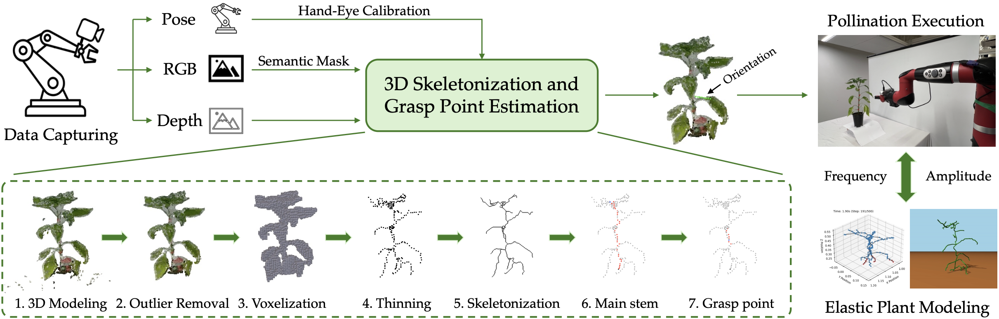
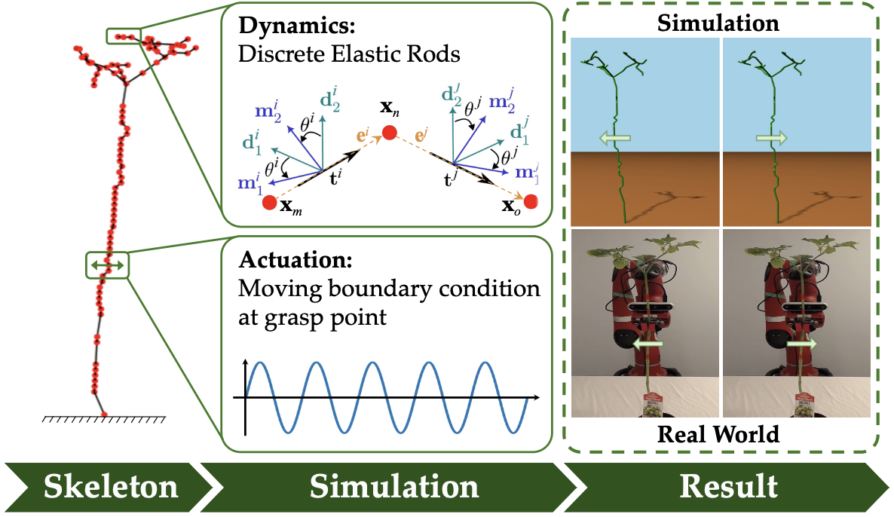
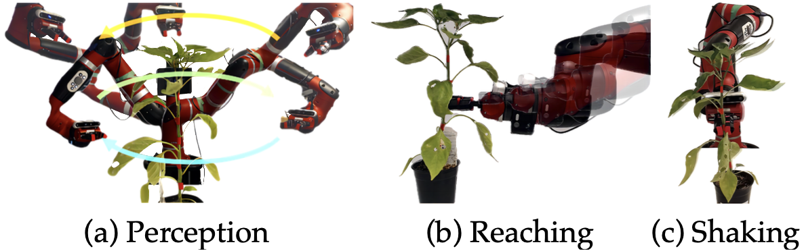
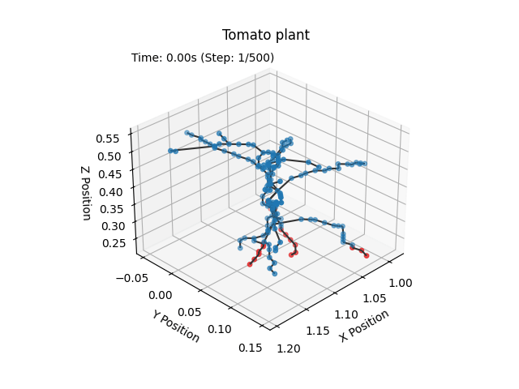
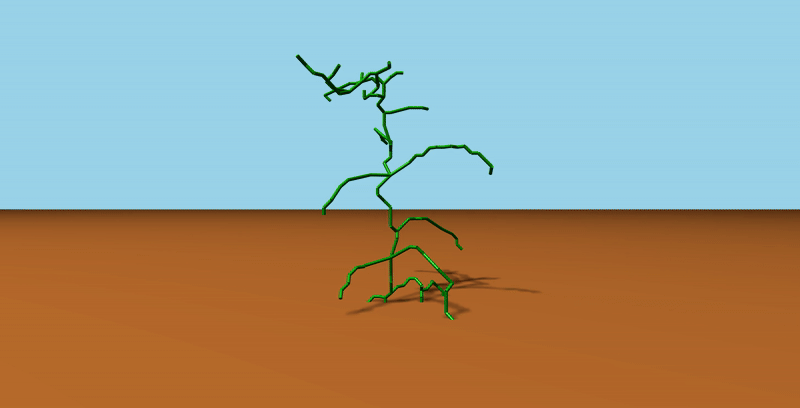
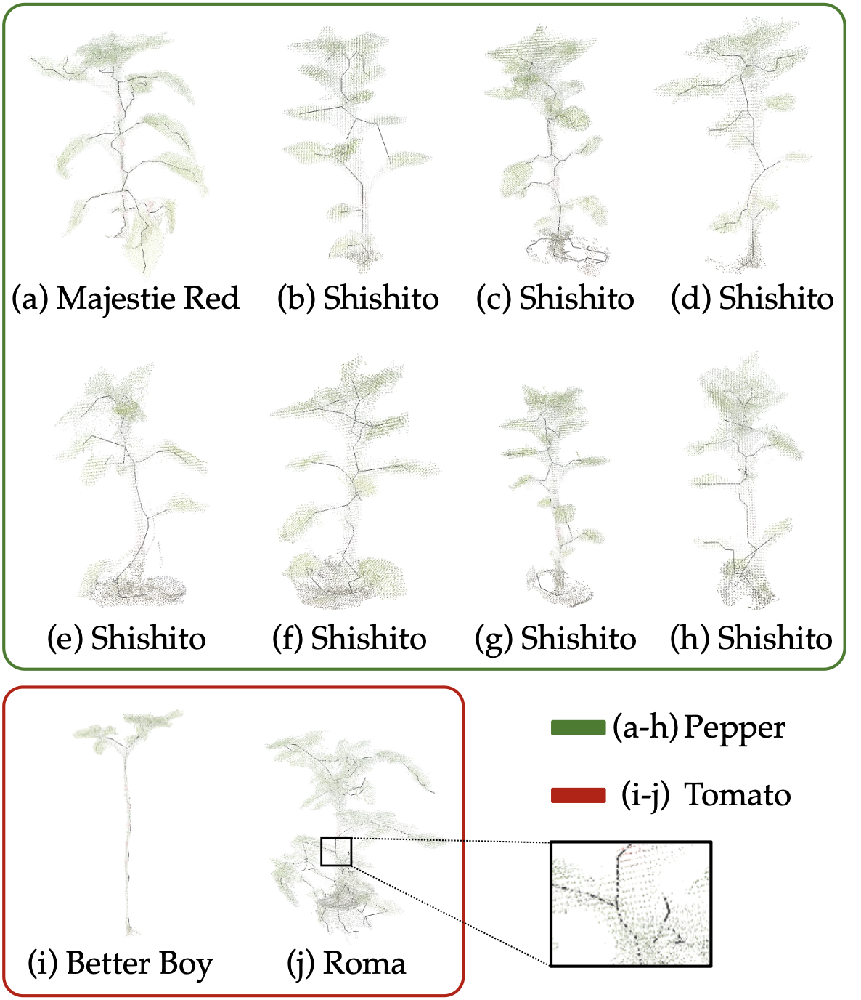
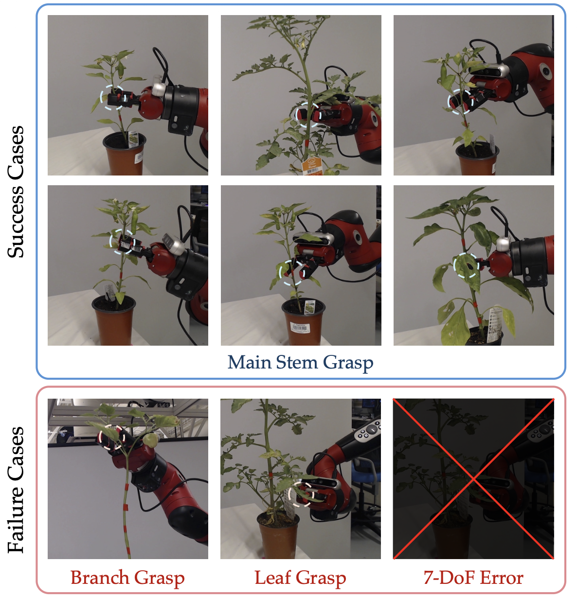

Vision-Guided Targeted Grasping and Vibration for Robotic Pollination in Controlled Environments
Under review, 2026
TL;DR
We present the first end-to-end robotic system for automated precision pollination, utilizing an eye-in-hand RGB-D sensor mounted on a robotic manipulator. After reconstructing a 3D plant model from the captured data, we apply a machine-learning-based 3D skeletonization technique to extract the plant's structure. A Discrete Elastic Rod (DER) model then simulates flower dynamics to optimize vibration parameters prior to real-world execution, guiding the robotic arm to grasp the optimal point and shake the stem. Across 40 trials on 10 morphologically diverse plants from multiple viewpoints, the system achieved a 92.5% main-stem grasping success rate, demonstrating a practical and scalable approach to automated crop pollination.
Key Contributions
- First robotic pollination system jointly integrating vision-based grasp planning and physics-based vibration modeling, validated by a 92.5% main-stem grasping success rate across 40 trials on 10 morphologically diverse plants approached from multiple viewpoints.
- Novel 3D plant skeletonization technique enabling 7-DoF obstacle-free grasp pose selection for safe and generalizable robotic manipulation of soft, flexible plant stems.
- Physics-based Discrete Elastic Rod (DER) model experimentally validated to predict how flower dynamics vary with actuation parameters, enabling a Sim-to-Real optimization framework for identifying optimal pollination strategies.
Project Design
1. Overview Pipeline

This is an end-to-end overview of the robotic pollination pipeline. RGB-D images and 7-DoF end-effector poses are fused via hand-eye calibration into a 3D point cloud, which is processed through skeletonization to extract the plant structure and identify the optimal grasp point. Discrete Elastic Rod simulations guide vibration parameter selection, after which the robot executes the full grasp-and-shake sequence.
2. Hand-Eye Calibration, Perception & Skeletonization
The robot's kinematic chain yields the flange-to-base transform TB→F. Through hand-eye calibration, the fixed extrinsic transform TF→C between the flange and the RGB-D camera is resolved, so the camera's world pose TB→C = TB→F · TF→C is known for any manipulator configuration — enabling accurate 3D back-projection of each depth frame into the robot frame.
Grounding DINO localizes the plant zero-shot via the text prompt "leaves," producing bounding boxes that SAM2 refines into a precise binary mask per frame. Applying this mask to each depth image removes pots, soil, and background clutter, leaving only plant points for 3D back-projection. The robot captures ≈30 RGB-D frames; each masked partial cloud is transformed into the world frame and fused globally via ICP.
The fused point cloud goes through multiple processing steps to extract a 3D skeleton of the plant — serving as the direct input to the elastic rod simulation. Simultaneously, a machine learning-based approach identifies the optimal collision-free grasping point on the main stem, producing a 7-DoF grasp pose ready for robotic execution.


Pepper plant 1 of 9 — a single parameter set, no tuning per plant
3. Simulation & Robotic Execution

Using PyDiSMech, the plant is modeled as a network of elastic rods discretized from the extracted skeleton. A time-varying displacement at the grasp node mimics vibration actuation, propagating through the skeleton to the flowers. Simulations reproduced experimental flower amplitude trends with strong correlation (r > 0.96), providing useful predictive insight for optimizing pollination parameters prior to real-world execution.
The manipulator scans the plant to construct a 3D skeleton and compute an obstacle-free grasp pose, then navigates a collision-free trajectory to the main stem. The soft gripper closes on the stem and applies DER-optimized vibrations for pollination.



Elastic rod simulation result (left) and the corresponding rendered output (right).
Experiments

The generalizability of the skeletonization pipeline, evaluated on 10 morphologically diverse plants (8 peppers, 2 tomatoes). A single parameter set successfully generated well-aligned skeletons across all specimens.

Qualitative results of the end-to-end grasping experiments show that the system achieved a 92.5% main-stem grasping success rate over 40 trials across 10 plants from multiple viewpoints. Failures (7.5%) resulted from branch/leaf grasps or 7-DoF pose errors.
Demo Videos
Conclusion
We presented the first robotic system to jointly integrate vision-guided grasping and physics-based vibration modeling for autonomous pollination in controlled environment agriculture. Our framework leverages 3D skeletonization for precise grasp planning and a Discrete Elastic Rod model to optimize vibration parameters, maximizing pollination efficiency. Simulations matched experimental flower motion trends with strong correlation, providing useful predictive insight for vibration-based pollination planning. Physical end-to-end experiments validated the feasibility of this model-driven approach, achieving a 92.5% main-stem grasping success rate and demonstrating that the optimal vibration amplitude can be reliably applied for successful robotic pollination. Future work will focus on scaling the system for full greenhouse deployment, refining vibration parameters against measured fruit-set rates, and extending adaptability to other crops.
Acknowledgement
This work was supported in part by the U.S. Department of Agriculture (Grant No. 2024-67021-42528 and 2022-67022-37021), the Korea Creative Content Agency (KOCCA) under Grant RS-2024-00345025, and the Institute of Information & Communications Technology Planning & Evaluation (IITP) funded by the Korean government (MSIT) under Grant No. RS-2019-II190079.